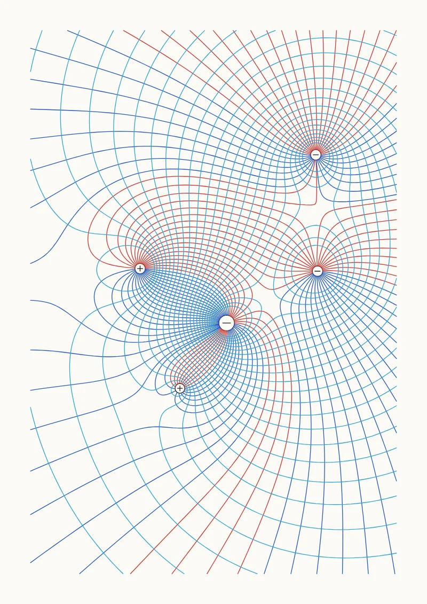

Field Lines
Electric field lines and equipotentials of charges, or the magnetic field around wires.
Pens
Source fans and potential levels form color families. Starts with 4 pens and works with anywhere from 1 to 8.
Settings
Field, Arrangement, Sources, Spread, Positive share, Lines per unit, Equipotentials (pen 2), Equipotentials, Marker radius (mm), Step (mm).
The preview uses the default settings on A4. Press R in the app for random variations. The SVG export is in millimeters with one Inkscape layer per pen, so it works with the AxiDraw extension, vpype and saxi.